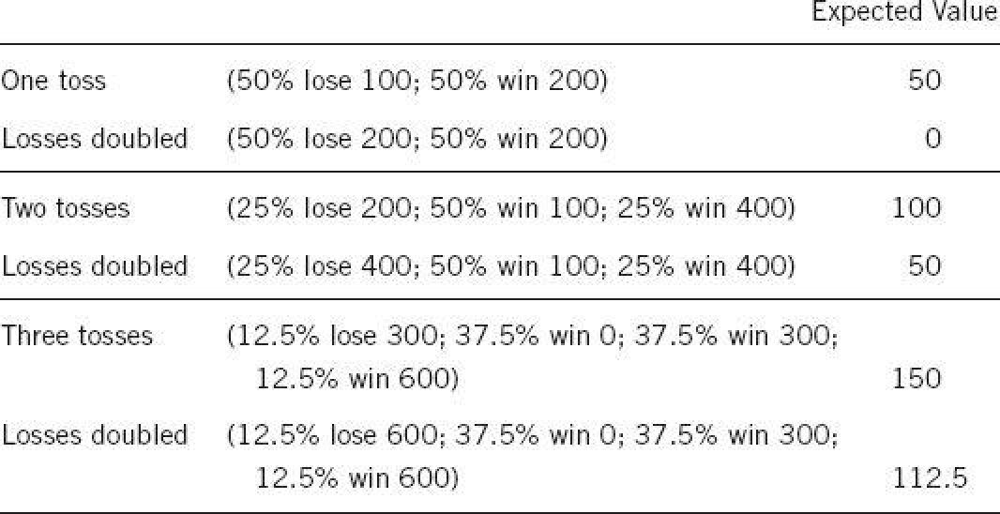

Imagine that you face the following pair of concurrent decisions. First examine both decisions, then make your choices.
Decision (i): Choose between
A. sure gain of $240
B. 25% chance to gain $1,000 and 75% chance to gain nothing
Decision (ii): Choose between
C. sure loss of $750
D. 75% chance to lose $1,000 and 25% chance to lose nothing
This pair of choice problems has an important place in the history of prospect theory, and it has new things to tell us about rationality. As you skimmed the two problems, your initial reaction to the sure things (A and C) was attraction to the first and aversion to the second. The emotional evaluation of “sure gain” and “sure loss” is an automatic reaction of System 1, which certainly occurs before the more effortful (and optional) computation of the expected values of the two gambles (respectively, a gain of $250 and a loss of $750). Most people’s choices correspond to the predilections of System 1, and large majorities prefer A to B and D to C. As in many other choices that involve moderate or high probabilities, people tend to be risk averse in the domain of gains and risk seeking in the domain of losses. In the original experiment that Amos and I carried out, 73% of respondents chose A in decision i and D in decision ii and only 3% favored the combination of B and C.
You were asked to examine both options before making your first choice, and you probably did so. But one thing you surely did not do: you did not compute the possible results of the four combinations of choices (A and C, A and D, B and C, B and D) to determine which combination you like best. Your separate preferences for the two problems were intuitively compelling and there was no reason to expect that they could lead to trouble. Furthermore, combining the two decision problems is a laborious exercise that you would need paper and pencil to complete. You did not do it. Now consider the following choice problem:
AD. 25% chance to win $240 and 75% chance to lose $760
BC. 25% chance to win $250 and 75% chance to lose $750
This choice is easy! Option BC actually dominates option AD (the technical term for one option being unequivocally better than another). You already know what comes next. The dominant option in AD is the combination of the two rejected options in the first pair of decision problems, the one that only 3% of respondents favored in our original study. The inferior option BC was preferred by 73% of respondents.
Broad or Narrow?
This set of choices has a lot to tell us about the limits of human rationality. For one thing, it helps us see the logical consistency of Human preferences for what it is—a hopeless mirage. Have another look at the last problem, the easy one. Would you have imagined the possibility of decomposing this obvious choice problem into a pair of problems that would lead a large majority of people to choose an inferior option? This is generally true: every simple choice formulated in terms of gains and losses can be deconstructed in innumerable ways into a combination of choices, yielding preferences that are likely to be inconsistent.
The example also shows that it is costly to be risk averse for gains and risk seeking for losses. These attitudes make you willing to pay a premium to obtain a sure gain rather than face a gamble, and also willing to pay a premium (in expected value) to avoid a sure loss. Both payments come out of the same pocket, and when you face both kinds of problems at once, the discrepant attitudes are unlikely to be optimal.
There were tw Bght hecome oo ways of construing decisions i and ii:
Broad framing was obviously superior in this case. Indeed, it will be superior (or at least not inferior) in every case in which several decisions are to be contemplated together. Imagine a longer list of 5 simple (binary) decisions to be considered simultaneously. The broad (comprehensive) frame consists of a single choice with 32 options. Narrow framing will yield a sequence of 5 simple choices. The sequence of 5 choices will be one of the 32 options of the broad frame. Will it be the best? Perhaps, but not very likely. A rational agent will of course engage in broad framing, but Humans are by nature narrow framers.
The ideal of logical consistency, as this example shows, is not achievable by our limited mind. Because we are susceptible to WY SIATI and averse to mental effort, we tend to make decisions as problems arise, even when we are specifically instructed to consider them jointly. We have neither the inclination nor the mental resources to enforce consistency on our preferences, and our preferences are not magically set to be coherent, as they are in the rational-agent model.
Samuelson’s Problem
The great Paul Samuelson—a giant among the economists of the twentieth century—famously asked a friend whether he would accept a gamble on the toss of a coin in which he could lose $100 or win $200. His friend responded, “I won’t bet because I would feel the $100 loss more than the $200 gain. But I’ll take you on if you promise to let me make 100 such bets.” Unless you are a decision theorist, you probably share the intuition of Samuelson’s friend, that playing a very favorable but risky gamble multiple times reduces the subjective risk. Samuelson found his friend’s answer interesting and went on to analyze it. He proved that under some very specific conditions, a utility maximizer who rejects a single gamble should also reject the offer of many.
Remarkably, Samuelson did not seem to mind the fact that his proof, which is of course valid, led to a conclusion that violates common sense, if not rationality: the offer of a hundred gambles is so attractive that no sane person would reject it. Matthew Rabin and Richard Thaler pointed out that “the aggregated gamble of one hundred 50–50 lose $100/gain $200 bets has an expected return of $5,000, with only a 1/2,300 chance of losing any money and merely a 1/62,000 chance of losing more than $1,000.” Their point, of course, is that if utility theory can be consistent with such a foolish preference under any circumstances, then something must be wrong with it as a model of rational choice. Samuelson had not seen Rabin’s proof of the absurd consequences of severe loss aversion for small bets, but he would surely not have been surprised by it. His willingness even to consider the possibility that it could be rational to reject the package testifies to the powerful hold of the rational model.
Let us assume that a very simple value function describes the preferences of Samuelson’s friend (call him Sam). To express his aversion to losses Sam first rewrites the bet, after multiplying each loss by a factor of 2. He then computes the expected value of the rewritten bet. Here are the results, for one, two, or three tosses. They are sufficiently instructive to deserve some Bght iciof 2

You can see in the display that the gamble has an expected value of 50. However, one toss is worth nothing to Sam because he feels that the pain of losing a dollar is twice as intense as the pleasure of winning a dollar. After rewriting the gamble to reflect his loss aversion, Sam will find that the value of the gamble is 0.
Now consider two tosses. The chances of losing have gone down to 25%. The two extreme outcomes (lose 200 or win 400) cancel out in value; they are equally likely, and the losses are weighted twice as much as the gain. But the intermediate outcome (one loss, one gain) is positive, and so is the compound gamble as a whole. Now you can see the cost of narrow framing and the magic of aggregating gambles. Here are two favorable gambles, which individually are worth nothing to Sam. If he encounters the offer on two separate occasions, he will turn it down both times. However, if he bundles the two offers together, they are jointly worth $50!
Things get even better when three gambles are bundled. The extreme outcomes still cancel out, but they have become less significant. The third toss, although worthless if evaluated on its own, has added $62.50 to the total value of the package. By the time Sam is offered five gambles, the expected value of the offer will be $250, his probability of losing anything will be 18.75%, and his cash equivalent will be $203.125. The notable aspect of this story is that Sam never wavers in his aversion to losses. However, the aggregation of favorable gambles rapidly reduces the probability of losing, and the impact of loss aversion on his preferences diminishes accordingly.
Now I have a sermon ready for Sam if he rejects the offer of a single highly favorable gamble played once, and for you if you share his unreasonable aversion to losses:
I sympathize with your aversion to losing any gamble, but it is costing you a lot of money. Please consider this question: Are you on your deathbed? Is this the last offer of a small favorable gamble that you will ever consider? Of course, you are unlikely to be offered exactly this gamble again, but you will have many opportunities to consider attractive gambles with stakes that are very small relative to your wealth. You will do yourself a large financial favor if you are able to see each of these gambles as part of a bundle of small gambles and rehearse the mantra that will get you significantly closer to economic rationality: you win a few, you lose a few. The main purpose of the mantra is to control your emotional response when you do lose. If you can trust it to be effective, you should remind yourself of it when deciding whether or not to accept a small risk with positive expected value. Remember these qualifications when using the mantra:
If you have the emotional discipline that this rule requires, Bght l d for e you will never consider a small gamble in isolation or be loss averse for a small gamble until you are actually on your deathbed—and not even then.
This advice is not impossible to follow. Experienced traders in financial markets live by it every day, shielding themselves from the pain of losses by broad framing. As was mentioned earlier, we now know that experimental subjects could be almost cured of their loss aversion (in a particular context) by inducing them to “think like a trader,” just as experienced baseball card traders are not as susceptible to the endowment effect as novices are. Students made risky decisions (to accept or reject gambles in which they could lose) under different instructions. In the narrow-framing condition, they were told to “make each decision as if it were the only one” and to accept their emotions. The instructions for broad framing of a decision included the phrases “imagine yourself as a trader,” “you do this all the time,” and “treat it as one of many monetary decisions, which will sum together to produce a ‘portfolio.’” The experimenters assessed the subjects’ emotional response to gains and losses by physiological measures, including changes in the electrical conductance of the skin that are used in lie detection. As expected, broad framing blunted the emotional reaction to losses and increased the willingness to take risks.
The combination of loss aversion and narrow framing is a costly curse. Individual investors can avoid that curse, achieving the emotional benefits of broad framing while also saving time and agony, by reducing the frequency with which they check how well their investments are doing. Closely following daily fluctuations is a losing proposition, because the pain of the frequent small losses exceeds the pleasure of the equally frequent small gains. Once a quarter is enough, and may be more than enough for individual investors. In addition to improving the emotional quality of life, the deliberate avoidance of exposure to short-term outcomes improves the quality of both decisions and outcomes. The typical short-term reaction to bad news is increased loss aversion. Investors who get aggregated feedback receive such news much less often and are likely to be less risk averse and to end up richer. You are also less prone to useless churning of your portfolio if you don’t know how every stock in it is doing every day (or every week or even every month). A commitment not to change one’s position for several periods (the equivalent of “locking in” an investment) improves financial performance.
Risk Policies
Decision makers who are prone to narrow framing construct a preference every time they face a risky choice. They would do better by having a risk policy that they routinely apply whenever a relevant problem arises. Familiar examples of risk policies are “always take the highest possible deductible when purchasing insurance” and “never buy extended warranties.” A risk policy is a broad frame. In the insurance examples, you expect the occasional loss of the entire deductible, or the occasional failure of an uninsured product. The relevant issue is your ability to reduce or eliminate the pain of the occasional loss by the thought that the policy that left you exposed to it will almost certainly be financially advantageous over the long run.
A risk policy that aggregates decisions is analogous to the outside view of planning problems that I discussed earlier. The outside view shift s the focus from the specifics of the current situation to Bght pecicy tthe statistics of outcomes in similar situations. The outside view is a broad frame for thinking about plans. A risk policy is a broad frame that embeds a particular risky choice in a set of similar choices.
The outside view and the risk policy are remedies against two distinct biases that affect many decisions: the exaggerated optimism of the planning fallacy and the exaggerated caution induced by loss aversion. The two biases oppose each other. Exaggerated optimism protects individuals and organizations from the paralyzing effects of loss aversion; loss aversion protects them from the follies of overconfident optimism. The upshot is rather comfortable for the decision maker. Optimists believe that the decisions they make are more prudent than they really are, and loss-averse decision makers correctly reject marginal propositions that they might otherwise accept. There is no guarantee, of course, that the biases cancel out in every situation. An organization that could eliminate both excessive optimism and excessive loss aversion should do so. The combination of the outside view with a risk policy should be the goal.
Richard Thaler tells of a discussion about decision making he had with the top managers of the 25 divisions of a large company. He asked them to consider a risky option in which, with equal probabilities, they could lose a large amount of the capital they controlled or earn double that amount. None of the executives was willing to take such a dangerous gamble. Thaler then turned to the CEO of the company, who was also present, and asked for his opinion. Without hesitation, the CEO answered, “I would like all of them to accept their risks.” In the context of that conversation, it was natural for the CEO to adopt a broad frame that encompassed all 25 bets. Like Sam facing 100 coin tosses, he could count on statistical aggregation to mitigate the overall risk.
Speaking of Risk Policies
“Tell her to think like a trader! You win a few, you lose a few.”
“I decided to evaluate my portfolio only once a quarter. I am too loss averse to make sensible decisions in the face of daily price fluctuations.”
“They never buy extended warranties. That’s their risk policy.”
“Each of our executives is loss averse in his or her domain. That’s perfectly natural, but the result is that the organization is not taking enough risk.”
P